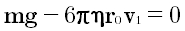

Электрон зарядын өлшеуге арналған Милликен тәжірибесіБұл жұмыста сізге электронның зарядын анықтау үшін Милликен тәжірибесін (1911) жасау ұсынылады. Оның эксперименттік қондырғысы екі металл пластинадан жасалған, олардың арасында камерасы бар үлкен жалпақ конденсатордан тұрады. Конденсатордың төсемдеріне Милликен жоғары потенциалдар айрымын туғыза отырып, тұрақты кернеуді берді, ал төсемдер арасына тозаңдандырылған май тамшы лары орналастырылды. Алдымен Милликен тамшыларының тұрақты түсу v 1 жылда өлшеді, яғни тамшыларға әсер ететін mg жердің тартылыс күші ауаның кедергі күшімен теңестірілетін жылдамдық.Камераны толтырып тұрған ауамен үйкеліс нәтижесінде тамшыларда заряд пайда болады. Содан кейін батарея қосылған кезде тамшының көтерілуіне өлшеу жүргізілді.  (1)
Милликеннің эксперименталды қондырғысы (сур.1.1), ішіне диаметрлері 22 см болатын М және N дөңгелек (олардың ара қашықтығы 1,6 см) латун пластиналардан тұратын жазық конденсатор орналасқан С үлкен камерадан тұрады. Жоғарғы пластинаның центріне май тамшылары
өтетін кішкентай Р саңылау жасалынған. Бұл тамшылар май ағынын тозаң үрлегіш көмегімен үрлеген кезде пайда болады. Осы жағдай үшін ауаны мақтасы бар шыны түтіктен өткізу арқылы тозаңнан тазартады. Май тамшыларының диаметрі шамамен
10
-4см. Аккумуляторлық В батареясынан конденсатор пластиналарына 104 В кернеу беріледі. Ауыстырғыш көмегімен пластиналарды қысқарта отырып, электр өрісін бұзуға болады. М және N пластиналар арасында түсетін
май тамшылары күшті жарық көзімен жарықтандырылады. Жарық бағыттарына перпендикуляр орналасқан көру түтігі арқылы тамшылардың әрекеті бақыланады. Тамшыларды конденсациялауға қажетті иондар, пластиналардың бүйірінен 3 - 10 см ара
қашықтықта орналасқан массасы 200 мг радий бөлшегінің сәулеленуімен пайда болды. Арнайы қондырғы көмегімен поршеньді түсіру арқылы газды кеңейту жүзеге асырылды. Газ ұлғайтылғаннан кейін 1-2 с өткенде радийді алып тастайды немесе
қорғасын экранмен көлегейлеп қояды. Осыдан кейін электр өрісі қосылып, көру түтігі арқылы тамшыларды бақылау басталады. Тамшының берілген уақыт мезетіндегі жүрген жолын есептеуге болатын үтікте шкала бар. Уақытты арретриті бар
дәл өлшенетін сағаттармен тіркеледі. Бақылау барысында Милликен жеке элементар зарядтарды кейінгі дәл өлшеудің барлық сериясының кілті болған құбылысты анықтады. "Ілінген тамшылармен жұмыс жасау кезінде, - деп жазады Милликен,
-. мен оларды радий сәулелерінен жабуды бірнеше рет ұмытып кеттім. Содан кейін мен ішінара тамшылардың біреуінің зарядын кенеттен өзгертіп, өріс бойымен немесе оған қарсы қозғала бастағанын байқадым, бірінші жағдайда ол оң, ал
екінші жағдайда теріс ионды ұстап алады. Бұл маған жеке тамшылардың зарядтарын ғана емес, сонымен бірге жеке атмосфералық ионның зарядын да сенімділікпен өлшеуге мүмкіндік берді. Шынында да, бір тамшының жылдамдығын екі рет, біріншісінде
ионды қармағанға дейін, екіншісінде ионды қармағаннан кейін өлшей отырып, мен тамшының қасиеттері мен қоршаған ортаның қасиеттерін мүлде ескермей, тек қармалған ионның зарядына пропорционалды шамамен жұмыс істей аламын". Конденсатордың
төсемдеріне Милликен жоғары потенциалдар айрымын туғыза отырып, тұрақты кернеуді берді, ал төсемдер арасына тозаңдандырылған май тамшылары орналастырылды. Алдымен Милликен тамшыларының тұрақты түсу v1 жылдамдығын өлшеді,
яғни тамшыларға әсер ететін mg жердің тартылыс күші ауаның кедергі күшімен теңестірілетін жылдамдық: Жұмысты "Бастау" түймешесін басу арқылы бастау керек. Осы кезде тамшы үзіліп төмен қарай қозғалады. Таймер көмегімен тамшының дисктер арасынан v1 өту жылдамдығын өлшеңіз. Тамшы төменгі сызықтан өткен таймер көрсетікішн жазып алып, "Ысыру" түймешесін басу керек. Тамшы көру алаңында тұрғанда, әрі төменгі сызықшалардан өткен кезде кернеу беріліп, төменгі сызықтан жоғарғы сызыққа тамшының өту v2 жылдамдығын анықтау үшін уақытты өлшеу керек. Кернеуді өшіріп, 2 - 4 пункт арасындағы тәжірибені бірнеше рет (5-6) қайталау керек. Нәтижелерді кестеге толтыру керек. Зарядты анықтау дәлдігін жоғарылату үшін өлшеулерді бір ғана тамшымен жүргізеді. Тамшы көру алаңынан кетуіне мүмкіндік беріңіз. Содан кейін тағы да "Бастау" түймешесін басыңыз. Жаңа тамшының өлшемі де заряды да басқаша болуы мүмкін. Кернеу шамасын, тамшының көтерілу уақыты 10 - 15 секунд болатындай етіп таңдап алу қажет. v1 және v2 жылдамдықтарын анықтау үшін өлшеулер жүргізілді. Ұсынылатын өлшеулер саны 20. Кестеде нөмір, t1, t2, v1, v2, r, q, q/e (e - электрон заряды) деген бағаналарға бөлінуі керек. Барлығы сегіз бағана. Сіз алған өлшеулер негізінде Милликен қандай қорытынды жасаған болар едің? Қорытындыға жауабыңызды жазыңыз және бақылау сұрақтарына жауап беріңіз. Бақылау сұрақтары
Если возникли вопросы, напишите. |